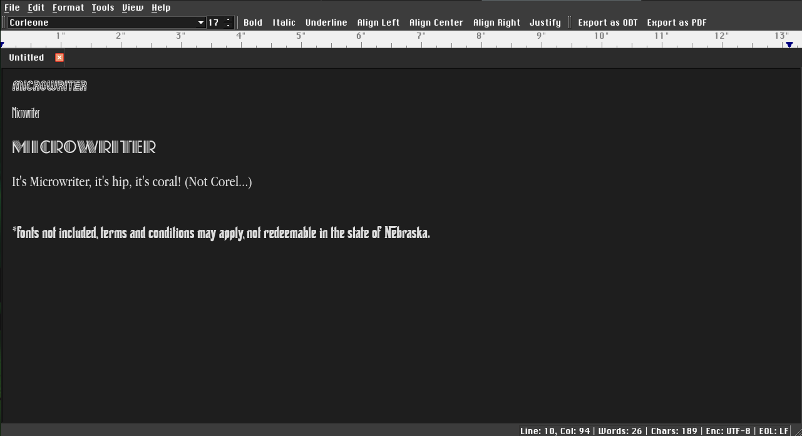
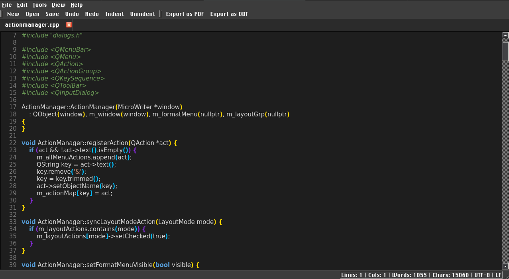

The diet soda of word processors, same refreshing taste, half the calories!
Version 2.7, released on October 28th, 2026
A lightweight, distraction-free rich text editor and code notepad built with C++ and Qt. MicroWriter combines the simplicity of a classic notepad with essential word processing tools, multi-tab editing, and versatile document export capabilities.



.md), HTML (.html), plain text (.txt), and source code files, plus export to PDF and ODT.| Shortcut | Action |
|---|---|
Ctrl + N | New tab / document |
Ctrl + O | Open file |
Ctrl + S | Save current file |
Ctrl + Shift + S | Save As |
Ctrl + W | Close active tab |
Ctrl + P | Print document |
Ctrl + Q | Exit MicroWriter |
| Shortcut | Action |
|---|---|
Ctrl + Z | Undo |
Ctrl + Y / Ctrl + Shift + Z | Redo |
Ctrl + X | Cut |
Ctrl + C | Copy |
Ctrl + V | Paste |
Ctrl + A | Select all text |
Ctrl + F | Find and Replace |
Alt + Q | Next Tab |
| Shortcut | Action |
|---|---|
Ctrl + 1 | Normal Layout |
Ctrl + 2 | Web Layout |
Ctrl + 3 | Print Layout |
Ctrl + 4 | Code Layout |
| Shortcut | Action |
|---|---|
Ctrl + B | Bold |
Ctrl + I | Italic |
Ctrl + U | Underline |
Ctrl + Shift + X | Strikethrough |
Ctrl + L | Align Left |
Ctrl + E | Align Center |
Ctrl + R | Align Right |
Ctrl + J | Justify |
| Shortcut | Action |
|---|---|
| F1 | Help & About Dialog |
| F2 | New Tab / Document |
| F3 | Cycle Through Tabs |
| F4 | Find & Replace (Regex / Plain Text) |
| F5 | Switch to Rich Text Layout |
| F6 | Switch to Code Layout |
| F7 | Open File Dialog |
| F8 | Save Current File |
| F9 | Aspell Spelling Correction Dialog |
| F10 | Export Document as ODF |
| F11 | Activate Dropdown Menu Bar |
| F12 | Quit / Exit MicroWriter |
| Shortcut | Action |
|---|---|
| Ctrl + S | Save Current File (Flashes Save indicator) |
| Ctrl + Q | Quit / Exit MicroWriter (Checks for unsaved changes) |
| Ctrl + F | Find/Replace |
| Ctrl + O | Open File |
| Shortcut | Action |
|---|---|
| Ctrl + X | Cut Selection / Line (Syncs to system clipboard) |
| Ctrl + C | Copy Selection / Line (Syncs to system clipboard) |
| Ctrl + V | Paste (Reads from system clipboard: wl-paste / xclip) |
| Ctrl + D | Nano-style Cut Entire Line |
| Ctrl + A | Select All Text |
| Ctrl + E / Ctrl + Z | Undo |
| Ctrl + R | Redo |
| Tab | Indent 4 Spaces / Block Indent Selection |
| Shift + Tab (Backtab) | Unindent Line / Selection |
| Shortcut | Action |
|---|---|
| Arrows | Navigate cursor |
| PgUp / PgDn | Scroll page up / down |
| Home / End | Jump to line start / end |
| Esc | Cancel active prompt, cheat sheet, or menu |
| Mouse Event | Target | Action |
|---|---|---|
| Click | Menu Bar (Row 0) | Open dropdown menus |
| Click | Tab Bar (Row 1) | Switch active tab |
| Double-Click | Tab Bar (Row 1) | Create new tab |
| Right-Click | Tab (Row 1) | Tab Context Menu (Save, Close, Save & Close) |
| Click | Toolbar (Row 2) | Quick actions (Save, PDF, Open, Formatting, Comments) |
| Click / Drag | Content Area | Position cursor or create text selection |
| Click | Gutter (Code Mode) | Select entire line |
| Mouse Wheel | Editor / Dialogs | Scroll document viewport or modal lists smoothly |
```bash
mkdir build && cd build
cmake ..
cmake --build .
microwriter -c [file1] [file2] ...
microwriter --console [file1] [file2] ...
microwriter -C [file1] [file2] ...
microwriter --code [file1] [file2] ...